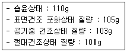
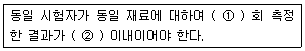
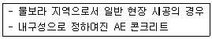
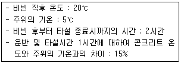
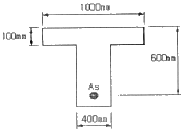
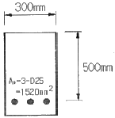

콘크리트산업기사 (2009-07-26 기출문제)
1과목: 콘크리트재료 및 배합
1. 철근의 인장시험에 의하여 구할 수 있는 기계적 특성값이 아닌 것은?
- 연신율
- 단면수축률
- 내력
- 취성파면률
(정답률: 알수없음)

2. 골재 특성의 정의에 관한 다음 설명 중 틀린 것은?
- 굵은골재의 최대치수는 질량비로 95% 이상 통과시키는 체 중에서 최소치수의 체 눈의 호칭치수로 나타낸 굵은골재의 치수를 말한다.
- 골재의 절대건조밀도는 골재 내부의 빈틈에 포함되어 있는 물이 전부 제거된 상태의 골재알의 밀도로써 골재의 절대건조상태의 질량을 골재의 절대용량으로 나눈 값을 말한다.
- 골재의 흡수율은 표면건조포화상태의 골재에 함유되어 있는 전체수량의, 절대건조상태의 골재 질량에 대한 백분율을 말한다.
- 골재의 실적률은 용기에 채운 골재의 절대용적의 그 용기 용적에 대한 백분율로, 단위용적질량을 밀도로 나눈 값의 백분율을 말한다.
(정답률: 알수없음)
3. 분말도가 높은 시멘트를 사용하여 콘크리트를 제조하는 경우 발생되는 특성으로 옳지 않은 것은?
- 건조수축이 감소한다.
- 초기강도가 증가한다.
- 블리딩량이 감소한다.
- 수화작용이 빠르다.
(정답률: 알수없음)
4. 로스앤젤레스 마모시험기에 의한 굵은골재의 마모시험에 대한 설명으로 틀린 것은?
- 시험기의 회전속도는 매분 30~33회의 균일한 속도로 회전시킨다.
- 시험이 끝난 시료는 시험기에서 꺼내서 1.7㎜의 망체로 친다. 이 때, 습식으로 쳐도 좋다.
- 시험결과로 마모감량을 계산할 때 반올림하여 소수점 이하 한 자리로 끝맺음한다.
- 로스앤젤레스 시험에 사용하는 강제의 구는 평균지름이 약 60㎜이고, 1개의 질량이 1㎏인 것을 사용한다.
(정답률: 알수없음)
5. 콘크리트의 배합에서 잔골재율에 관한 설명으로 틀린 것은?
- 잔골재율이 증가하면 점성이 증가한다.
- 잔골재율이 증가하면 슬럼프가 감소한다.
- 잔골재율이 증가하면 공기량이 증가한다.
- 잔골재율을 크게 하면 단위수량 및 단위시멘트량을 절약할 수 있어 경제적으로 유리하다.
(정답률: 알수없음)
6. 알루미나 시멘트의 특성에 관한 다음 설명 중 옳지 않은 것은?
- 포틀랜드 시멘트에 비하여 빨리 응결하는 특성을 갖는다.
- 응결 및 경화시 발열량이 적다.
- 화학적 저항성이 크고 내구성도 크나 가격이 고가이다.
- 내화성이 우수하므로 내화물용으로 사용된다.
(정답률: 알수없음)
7. 시멘트의 주요 합성물에 대한 설명으로 옳은 것은?
- C3A는 장기강도를 크게 한다.
- C2S는 강도발현속도가 느리다.
- C4AF는 건조수축이 크다.
- C3S는 C2S에 비해 수화열이 낮다.
(정답률: 20%)
8. 실제 사용한 콘크리트의 31회 압축강도 시험으로부터 압축강도(MPa) 잔차의 제곱을 구하여 합한 값이 270이었다. 콘크리트의 배합강도를 결정하기 위한 압축강도의 표준편차를 구하면?
- 2.85MPa
- 2.90MPa
- 2.95MPa
- 3.00MPa
(정답률: 알수없음)
9. 아래 표와 같은 조건을 갖는 잔골재의 표면수율 및 흡수율은?

- 표면수율 : 4.95%, 흡수율 : 8.91%
- 표면수율 : 4.76%, 흡수율 : 1.98%
- 표면수율 : 4.95%, 흡수율 : 6.93%
- 표면수율 : 4.76%, 흡수율 : 3.96%
(정답률: 알수없음)
10. 콘크리트의 배합에서 단면이 큰 철근콘크리트의 슬럼프 표준값으로 옳은 것은?
- 80~150㎜
- 60~120㎜
- 50~100㎜
- 100~150㎜
(정답률: 알수없음)
11. 잔골재에 대한 설명 중 틀린 것은?
- 품질이 좋은 콘크리트를 만들기 위해 잔골재의 조립률은 2.3~3.1 범위에서 사용하는 것이 바람직하다.
- 바다모래를 다른 잔골재와 혼합하여 사용하면 염화물 함유량의 허용한도가 높아진다.
- 부순 잔골재를 분류할 때 습식인 경우에는 물로 충분히 씻어서 한다.
- 잔골재로 사용할 모래의 흡수율은 3.0% 이하의 값을 표준으로 한다.
(정답률: 알수없음)
12. 다음의 포틀랜드 시멘트 중 수화작용에 따르는 발열이 적기 때문에 매스콘크리트에 적당한 시멘트는?
- 보통 포틀랜드 시멘트
- 중용열 포틀랜드 시멘트
- 조강 포틀랜드 시멘트
- 백색 포틀랜드 시멘트
(정답률: 알수없음)
13. 시멘트의 풍화에 대한 설명으로 잘못된 것은?
- 시멘트의 저장 중 공기에 노출되면 공기 중의 습기 등을 흡수하여 가벼운 수화반응을 일으키는 현상을 말한다.
- 풍화가 진행되면 시멘트의 비중이 증가한다.
- 풍화한 시멘트를 사용하면 응결이 늦어진다.
- 풍화한 시멘트를 사용한 콘크리트는 강도발현이 저하된다.
(정답률: 73%)
14. 콘크리트의 배합에 대한 일반사항을 설명한 것으로 틀린 것은?
- 현장 콘크리트의 품질변동을 고려하여 콘크리트의 배합강도는 설계기준강도보다 적게 정한다.
- 잔골재율은 소요의 워커빌리티를 얻을 수 있는 범위 내에서 단위수량이 최소가 되도록 시험에 의해 정한다.
- 단위수량은 작업이 가능한 범위 내에서 될 수 있는 대로 적게 되도록 시험을 통해 정한다.
- 물-결합재비는 소요의 강도, 내구성, 수밀성 및 균열저항성 등을 고려하여 정한다.
(정답률: 90%)
15. 콘크리트의 압축강도를 알지 못할 때, 또는 압축강도의 시험횟수가 14회 이하인 경우 콘크리트의 배합강도를 구한 것으로 틀린 것은?
- 설계기준강도 fck=20MPa일 때, 배합강도 fcr=27MPa이다.
- 설계기준강도 fck=25MPa일 때, 배합강도 fcr=33MPa이다.
- 설계기준강도 fck=30MPa일 때, 배합강도 fcr=38.5MPa이다.
- 설계기준강도 fck=40MPa일 때, 배합강도 fcr=50MPa이다.
(정답률: 알수없음)
16. 콘크리트 1m3를 만드는 배합설계에서 필요한 골재의 절대 용적이 720L이었다. 잔골재율이 34%, 잔골재 밀도가 2.7g/cm3, 굵은골재의 밀도가 2.6g/cm3일 때, 단위잔골재량 S와 단위굵은골재량 G를 구하면?
- S=636㎏, G=1283㎏
- S=661㎏, G=1236㎏
- S=1236㎏, G=661㎏
- S=1283㎏, G=636㎏
(정답률: 알수없음)
17. 콘크리트용 혼화재로서 플라이 애시의 특징이 아닌 것은?
- 콘크리트의 워커빌리티를 좋게 하고 사용수량을 감소시킬 수 있다.
- 수화열이 적어 매스콘크리트용에 적합하다.
- 포졸란 작용으로 인해 초기강도가 작다.
- 경화시 건조수축이 큰 것이 단점이지만, 화학적 저항성이 우수하다.
(정답률: 알수없음)
18. 조립률 2.4인 잔골재와 조립률 7.4인 굵은골재를 1 : 1.5의 비율로 혼합할 때 혼합골재의 조립률은?
- 4.5
- 5.4
- 5.7
- 6.2
(정답률: 54%)
19. 공기투과장치에 의한 포틀랜드 시멘트 분말도 시험에서 시험기구 및 재료로 적당하지 않은 것은?
- 마노미터액
- 거름종이
- 스톱워치
- 다짐봉
(정답률: 알수없음)
20. 시멘트 비중시험(KS L 5110)의 정밀도 및 편차에 대한 아래 표의 내용에서 ( )안에 알맞은 수치는?

- ①=2, ②=±0.02
- ①=2, ②=±0.03
- ①=3, ②=±0.03
- ①=3, ②=±0.02
(정답률: 알수없음)
2과목: 콘크리트제조, 시험 및 품질관리
21. 콘크리트의 각종 강도에 관한 설명으로 틀린 것은?
- 콘크리트의 인장강도 시험은 쪼갬인장강도 시험방법을 주로 이용한다.
- 콘크리트의 압축강도가 일반콘크리트의 품질관리에 가장 대표적으로 이용된다.
- 고강도 콘크리트일수록 인장강도/압축강도의 비가 작아진다.
- 압축강도시험에서 재하속도를 빠르게 하면 강도값이 실제보다 작아지는 경향이 있다.
(정답률: 알수없음)
22. 다음 중 일반적인 콘크리트 강도의 비파괴 시험방법에 해당하지 않는 것은?
- 반발경도에 의한 방법
- 평판재하법
- 초음파법
- 음향방출법
(정답률: 알수없음)
23. 품질관리의 진행순서로 옳은 것은?
- 계획→실시→검토→조치
- 계획→검토→실시→조치
- 계획→실시→조치→검토
- 계획→검토→조치→실시
(정답률: 73%)
24. 블리딩(bleeding)을 저감시키는 요인이 아닌 것은?
- 물-결합재비가 클 때
- 응결시간이 빠른 시멘트를 사용할 때
- 분말도가 미세한 시멘트를 사용할 때
- 공기연행제, 감수제를 사용할 때
(정답률: 알수없음)
25. 콘크리트의 배합강도를 결정할 때 압축강도의 표준편차는 몇 회 이상의 실험실적으로부터 결정하는 것을 원칙으로 하는가?
- 10회
- 20회
- 30회
- 40회
(정답률: 47%)
26. 콘크리트의 공시체가 압축 혹은 인장을 받을 때, 공시체 축의 직각방향(횡방향)의 변형률을 축방향 변형률로 나눈 값을 무엇이라고 하는가?
- 탄성계수
- 푸아송수
- 푸아송비
- 크리프 계수
(정답률: 42%)
27. 압축강도에 의한 콘크리트의 품질검사에 관한 다음 설명 중 옳지 않은 것은?
- 일반적인 경우 조기재령에 있어서의 압축강도에 의해 실시한다.
- 시험횟수는 콘크리트 200~300m3마다 1회로 정하고 있다.
- 1회의 시험치는 현장에서 채취한 시험체 3개의 연속한 압축강도 시험값의 평균치로 한다.
- 시험체는 구조물에 사용되는 콘크리트를 대표할 수 있도록 채취하여야 한다.
(정답률: 46%)
28. 굵은 콘크리트의 크리프(creep)에 영향을 주는 요소에 대한 설명이 잘못된 것은?
- 재하응력이 클수록 크리프가 크다.
- 재하시의 재령이 작을수록 크리프가 크다.
- 조강시멘트를 사용한 콘크리트는 보통시멘트를 사용한 콘크리트보다 크리프가 크다.
- 부재의 치수가 작을수록 크리프가 크다.
(정답률: 58%)
29. 콘크리트의 wokrability를 측정하는 방법이 아닌 것은?
- 플로(flow)시험
- 켈리볼(kellyball)시험
- 슬럼프(slump)시험
- 엥글러(engler)시험
(정답률: 알수없음)
30. 콘크리트의 압축강도 시험 결과 최대 하중이 190000N에서 공시체가 파괴되었다. 이 공시체의 압축강도는 얼마인가? (단, 공시체의 지름은 100㎜이다.)
- 24.2MPa
- 25.3MPa
- 26.0MPa
- 30.0MPa
(정답률: 알수없음)
31. 1개마다 양, 불량으로 구별할 경우 사용하나 불량률을 계산하지 않고 불량개수에 의해서 관리하는 경우에 사용하는 관리도는?
- U관리도
- C관리도
- P관리도
- Pn관리도
(정답률: 알수없음)
32. 콘크리트의 탄성계수가 2.5×104MPa이고 푸아송비가 0.2일 때 전단탄성계수는?
- 5.5×104MPa
- 7.5×104MPa
- 1.04×104MPa
- 12.4×104MPa
(정답률: 알수없음)
33. KS F 2423 쪼갬인장강도시험을 높이 300㎜, 지름 150㎜의 원주형 공시체를 사용하여 실시한 결과 파괴하중이 800kN이 측정되었다. 인장강도를 구하면?
- 12.3MPa
- 11.3MPa
- 10.3MPa
- 9.3MPa
(정답률: 50%)
34. 콘크리트 동해 및 내동해성에 관한 설명 중 잘못된 것은?
- 흡수율이 큰 골재를 사용하면 동해를 일으키기 쉽다.
- 공기연행제를 사용하면 내동해성을 향상시키는데 큰 효과가 있다.
- 건습 반복을 받는 부재가 건조상태로 유지되는 부재에 비해 동해를 일으키기 쉽다.
- 물-결합재비가 큰 콘크리트를 사용하면 동해를 작게 할 수 있다.
(정답률: 알수없음)
35. 관입저항침에 의한 콘크리트의 응결시간 시험방법에 관한 설명으로 적합하지 않은 것은?
- 시료는 콘크리트를 체로 쳐서 모르타르로 시험한다.
- 시료의 위 표면적 10000mm2당 1회의 비율로 다진다.
- 보통의 배합인 경우 20~25℃ 온도의 실험실에서 시험한다.
- 관입저항이 3.5MPa, 28.0MPa이 될 때 시간을 각각 초결시간과 종결시간으로 결정한다.
(정답률: 알수없음)
36. 콘크리트의 비비기에 대한 설명으로 옳은 것은?
- 강제식 믹서의 초소 비비기 시간은 30초 이상으로 하여야 한다.
- 비비기는 미리 정해 둔 비비기 시간의 3배 이상 계속하여야 한다.
- 비비기를 시작하기 전에 미리 믹서 내부를 모르타르로 부착하여야 한다.
- 가경식 믹서의 최초 비비기 시간은 1분 이상으로 하여야 한다.
(정답률: 알수없음)
37. 콘크리트의 목표 슬럼프 플로가 600㎜일 때 허용범위는?
- ±50㎜
- ±100㎜
- ±150㎜
- ±200㎜
(정답률: 알수없음)
38. 블리딩 시험용기의 안지름이 25㎝이고, 안높이는 28.5㎝이다. 이 용기에 30㎏의 콘크리트를 채우고 측정한 블리딩에 따른 물의 총 용적은 200cm3이었다면 블리딩량은 얼마인가?
- 0.27cm3/cm2
- 0.32cm3/cm2
- 0.41cm3/cm2
- 0.53cm3/cm2
(정답률: 알수없음)
39. 일반 콘크리트 제조설비 및 제조공정에 있어서 검사 시기 및 횟수를 설명한 것으로 틀린 것은?
- 계량설비의 계량정밀도는 임의연속된 10배치에 대하여 각 계량기기별, 재료별로 공사 시작전 및 공사중 1회/6개월 이상 검사해야 한다.
- 잔골재의 조립률은 1회/일 이상 검사해야 한다.
- 잔골재 표면수율은 1회/일 이상 검사해야 한다.
- 믹서 성능은 공사 시작전 및 공사중 1회/6개월 이상 검사해야 한다.
(정답률: 알수없음)
40. 콘크리트 타설 후 응결 및 경화과정에서 나타나는 초기 소성수축 균열에 대한 설명으로 옳은 것은?
- 콘크리트 표면의 물의 증발속도가 블리딩 속도보다 빠른 경우 발생되는 균열이다.
- 콘크리트 표면 가까이에 있는 철근, 매설물 또는 입자가 큰 골재 등이 침하를 방해하기 때문에 나타난다.
- 균열이 발생하여 커지는 정도는 블리딩이 큰 콘크리트일수록 높아진다.
- 콘크리트 작업시 시공이음부의 레이턴스를 제거하지 않았을 때 나타난다.
(정답률: 알수없음)
3과목: 콘크리트의 시공
41. 한중콘크리트로써 시공하여야 하는 기상조건의 기준으로 가장 적합한 것은?
- 타설온도 4℃ 이하
- 일평균기온 4℃ 이하
- 타설온도 -4℃ 이하
- 일평균기온 -4℃ 이하
(정답률: 알수없음)
42. 매스콘크리트 부재는 경화과정에서 발생하는 수화열이 균열을 발생시키기도 한다. 수화 열에 의한 균열 발생을 최소화하기 휘한 다음의 대책 방안 중 잘못 기술한 것은?
- 시멘트 사용량을 최소화하거나 저열 시멘트를 사용한다.
- 플라이 애시와 같은 혼화 재료를 사용하여 수화열을 저감시킨다.
- 콘크리트 내부온도 상승을 완만하게 하고, 또 최고온도에 도달한 후에는 급냉시켜 외기온도와 같게 한다.
- 매스콘크리트 타설 후의 온도제어 대책으로써 파이프 쿨링을 실시한다.
(정답률: 알수없음)
43. 경량골재 콘크리트에 대한 다음의 설명 중 틀린 것은?
- 슬럼프값은 180㎜ 이하, 단위시멘트량의 최소값은 300㎏, 물-결합재비의 최대값은 60%로 한다.
- 강제식 믹서를 사용할 때의 경량골재 콘크리트 비비기 시간의 표준은 1분 이상으로 한다.
- 골재의 전부 또는 일부를 인공경량골재를 써서 만든 콘크리트로서 기건 단위질량이 2.0~2.5t/m3인 콘크리트를 경량골재 콘크리트라고 한다.
- 경량 굵은골재 중의 부립률 한도는 질량백분율로 10%이다.
(정답률: 알수없음)
44. 매스콘크리트의 타설온도를 낮추는 방법으로 물, 골재 등의 재료를 미리 냉각시키는 방법을 무엇이라 하는가?
- 파이프 쿨링
- 트래미 방법
- 콜드 조인트
- 프리 쿨링
(정답률: 70%)
45. 프리플레이스트 콘크리트의 주입 모르타르 품질에 대한 설명으로 옳지 않은 것은?
- 주입 모르타르는 재료분리가 적고 블리딩이 적으며 소요의 팽창을 하여야 한다.
- 유동성은 유하시간으로 설정하며, 일반적으로 16~20초를 표준으로 한다.
- 재료분리 저항성은 블리딩률로 설정하며, 시험 시작 후 4시간에서의 값이 5% 이하를 표준으로 한다.
- 팽창성은 팽창률로 설정하며, 시험 시작 후 3시간에서의 값이 5~10%를 표준으로한다.
(정답률: 15%)
46. 일반적인 매스콘크리트 시공에 바람직한 시멘트가 아닌 것은?
- 플라이 애시 시멘트
- 고로 슬래그 시멘트
- 알루미나 시멘트
- 중용열 시멘트
(정답률: 32%)
47. 일반적으로 프리플레이스트 콘크리트용 굵은골재의 최대치수는 최소치수의 몇배 정도가 좋은가?
- 1~2배
- 2~4배
- 5~7배
- 8~9배
(정답률: 알수없음)
48. 숏크리트에 대한 설명으로 잘못된 것은?
- 숏크리트 장기ㅣ강도의 설계기준강도는 재령 28일로 설정하며, 그 값은 18MPa 이상으로 한다.
- 일반적으로 숏크리트이 리바운드율은 40~50%의 값을 표준으로 한다.
- 베이스 콘크리트를 펌프로 압송할 경우 슬럼프는 120㎜ 이상을 표준으로 한다.
- 숏크리트에 사용하는 시멘트는 보통포틀랜드 시멘트를 사용하는 것을 표준으로 한다
(정답률: 10%)
49. 시공이음면의 거푸집 철거는 콘크리트가 굳은 후 되도록 빠른 시기에 하는 것이 좋다. 일반적으로 겨울철에 연직시공이음부터 거푸집 제거시키는 콘크리트 타설 후 얼마 정도로 하는 것이 좋은가?
- 4~6시간
- 7~9시간
- 10~15시간
- 15~20시간
(정답률: 알수없음)
50. 콘크리트 공장제품의 양생에 대한 설명으로 틀린 것은?
- 증기양생을 할 때는 일반적으로 비빈 후 2~3시간 이상 경과된 후에 증기양생을 실시한다.
- PSC 말뚝 등은 주로 오토클레이브 양생으로 제작한다.
- 오토클레이브 양생 등의 고압증기양생을 실시한 공장제품에는 양생 후 재령에 따른 콘크리트 강도의 증가는 거의 기대할 수 없다.
- 가압양생은 성형된 콘크리트에 10MPa 정도의 압력을 가한 후 고온으로 양생한다.
(정답률: 알수없음)
51. 수밀콘크리트에 대한 설명 중 옳지 않은 것은?
- 콘크리트의 소요슬럼프는 되도록 적게 하고, 180㎜를 넘지 않도록 한다.
- 단위수량 및 물-결합재비는 되도록 적게 하고, 단위굵은골재량을 되도록 크게 한다.
- 연속타설시간 간격은 외기온이 25℃ 미만일 때는 90분 이내로 한다.
- 물-결합재비는 45% 이하를 표준으로 한다.
(정답률: 알수없음)
52. 콘크리트 타설시 슈트, 펌프 배관, 버킷, 호퍼 등의 배출구와 타설면까지의 낙하 높이로 가장 적합한 것은?
- 1.5m 이하
- 2.0m 이하
- 2.5m 이하
- 3.0m 이하
(정답률: 알수없음)
53. 팽창콘크리트의 시공관리에 대한 설명으로 잘못된 것은?
- 콘크리트를 비비고 나서 타설을 끝낼 때까지의 시간은 기온ㆍ습도 등의 기상조건과 시공에 관한 등급에 따라 1~2시간 이내로 하여야 한다.
- 한중콘크리트의 경우 타설할 때 콘크리트 온도는 10℃ 이상 20℃ 미만으로 한다.
- 서중콘크리트의 경우 비비기 직후 온도는 30℃ 이하, 타설할 때 온도는 35℃ 이하로 될 수 있는 한 낮은 온도로 하여야 한다.
- 콘크리트를 타설한 후에는 적당한 양생을 실시하며 콘크리트 온도는 20℃ 이상을 10일간 이상 유지시켜야 한다.
(정답률: 알수없음)
54. 수중콘크리트 타설의 원칙을 설명한 것으로 틀린 것은?
- 시멘트의 유실, 레이턴스의 발생을 방지하기 위하여 정수 중에 타설하는 것이 좋으며, 완전히 물막이를 할 수 없는 경우에도 유속은 1초간 50㎜ 이하로 하여야 한다.
- 트레미로 타설하는 경우 트레미의 안지름은 수심 5m 이상에서 300~500㎜ 정도가 좋으며, 굵은골재 최대치수는 8배 정도가 필요하다.
- 한 구획의 콘크리트를 빠른 시간 내에 타설할 수 있도록 시공계획을 세우고 수중에 낙하시켜 시간을 단축시킨다.
- 콘크리트 펌프 안지름은 0/1~0.15m 정도가 좋으며, 수송관 1개로 타설할 수 있는 면적은 5m2 정도이다.
(정답률: 17%)
55. 아래 표와 같은 조건에서 해양콘크리트의 최대 물-결합재비는?(오류 신고가 접수된 문제입니다. 반드시 정답과 해설을 확인하시기 바랍니다.)

- 40%
- 45%
- 50%
- 55%
(정답률: 알수없음)
56. 아래 표와 같은 조건에서 한중콘크리트의 타설이 종료되었을 때 온도를 구하면?

- 10.5℃
- 12.5℃
- 15.5℃
- 17.75℃
(정답률: 46%)
57. 공장제품용 콘크리트의 일반사항을 설명한 것으로 잘못된 것은?
- 굵은골재의 최대치수는 40㎜ 이하이고 공장제품 최소두께의 2/5 이하이며, 또한 강재 최소간격의 4/5를 넘어서는 안된다.
- 프리스트레스트 콘크리트 제품의 경우 재생골재를 사용해서는 안된다.
- PS 강재의 스터럽 또는 가외철근 등에 대해서는 용접하는 것을 원칙으로 한다.
- 콘크리트 배합에서 슬럼프가 20㎜ 이상인 콘크리트에 대하여는 슬럼프 시험을 원칙으로 하며, 20㎜ 미만인 경우 제조방법에 적합한 시험방법에 의한다.
(정답률: 알수없음)
58. 결합재로서 시멘트를 전혀 사용하지 않고 열경화성 또는 열가소성 수지 등을 사용하여 골재를 결합시키는 콘크리트는?
- 폴리머 시멘트 콘크리트
- 중량 콘크리트
- 에코시멘트 콘크리트
- 포러스 콘크리트
(정답률: 알수없음)
59. 설계기준강도가 24MPa인 콘크리트의 슬래브 및 보의 밑면, 아니 내면 거푸집을 해체 가능한 압축강도 시험결과 최소값은?
- 5MPa
- 14MPa
- 16MPa
- 24MPa
(정답률: 알수없음)
60. 철근이 배치된 일반적인 매스콘크리트 구조물에서 균열 발생을 방지하여야 할 경우 표준적인 온도균열지수는?
- 1.5 미만
- 1.5 이상
- 0.7 이상 1.2 미만
- 1.2 이상 1.5 미만
(정답률: 6%)
4과목: 콘크리트 구조 및 유지관리
61. PS 강선이 갖추어야 할 일반적인 성질로 옳지 않은 것은?
- 인장강도가 높아야 한다.
- 적당한 연성과 인성이 있어야 한다.
- 직선성(直線性)이 우수해야 한다.
- 릴랙세닝션이 가능한 커야 한다.
(정답률: 알수없음)
62. 철근과 콘크리트가 합성체로서 일치가 되어 외력에 저항할 수 있는 이유에 대한 설명 중 옳지 않은 것은?
- 철근과 콘크리트 사이의 부착강도가 크다
- 철근과 콘크리트는 열에 대한 팽창계수가 거의 같다.
- 콘크리트 속에 묻힌 철근은 녹슬지 않는다.
- 철근과 콘크리트는 탄성계수가 거의 같다.
(정답률: 알수없음)
63. 그림과 같은 T형 단면에 As=8-D32(6354mm2)의 철근이 배근되었을 때 등가압축응력의 깊이(a)는? (단, fck=28MPa, fy=400MPa이다.)

- 82.53㎜
- 116.97㎜
- 135.35㎜
- 175.24㎜
(정답률: 알수없음)
64. 콘크리트의 내화성에 관한 설명으로 가장 부적당한 것은?
- 콘크리트는 내화성이 우수하여 600℃ 정도의 화열을 받아도 압축강도의 저하는 없다.
- 석회석이나 화강암 골재는 특히 내화성을 필요로 하는 장소의 콘크리트에 사용하지 않도록 한다.
- 화재 피해를 받은 콘크리트의 중성화속도는 화재 피해를 받지 않은 것과 비교하여 크다.
- 화재 발생히 급격한 가열, 부재 단명이 얇거나 콘크리트의 함수율이 높은 경우는 피복콘크리트이 폭렬이 발생하기 쉽다.
(정답률: 38%)
65. 현행 콘크리트구조설계기준에 의거 강도감소계수 ø의 값으로 틀린 것은?
- 인장지배 단면 : 0.85
- 압축지배 단면으로서 나선철근으로 보강된 철근콘크리트 부재 : 0.65
- 전단력과 비틀림모멘트 : 0.75
- 무근콘크리트의 휨모멘트 : 0.55
(정답률: 알수없음)
66. 콘크리트 비파괴시험의 종류인 음향방출법(acoustic emission)에 대한 설명으로 거리가 먼 것은?
- 콘크리트에 대한 과거의 재하이력을 추정할 수 있다.
- 재하에 따른 콘크리트의 균열발생음을 계측한다.
- 이미 존재하고 있는 성장이 멈춰진 결함은 검출할 수 없다.
- 측정부위는 콘크리트의 표층에 제한된다.
(정답률: 34%)
67. 강도설계법에 의해 설계된 폭 300㎜, 유효깊이 500㎜인 직사각형 보에서 콘크리트가 부담하는 전단강도(Vc)는? (단, fck=28MPa이다.)
- 132.3kN
- 168.9kN
- 204.5kN
- 268.2kN
(정답률: 알수없음)
68. 그림과 같은 단철근 직사각형 보에서 등가응력사각형의 깊이(a)를 구하면? (단, fck= 24Mpa, fy=400MPa)

- 79.35㎜
- 89.35㎜
- 99.35㎜
- 109.35㎜
(정답률: 알수없음)
69. 콘크리트 중성화 방지대책이 아닌 것은?
- 콘크리트를 충분히 다짐하여 타설하고 결함을 발생시키지 않는다.
- 콘크리트의 피복두께를 크게 한다.
- 물-결합재비를 높게 한다.
- 충분한 초기 양생을 한다.
(정답률: 9%)
70. 수동식 주입공법의 장점으로 틀린 것은?
- 다량의 수지를 단시간에 주입할 수 있다.
- 결함폭 0.5㎜ 이하의 경우에 매우 효과적이다.
- 들뜸이 매우 작은 부위에도 주입이 가능하다.
- 주입압이나 속도를 조절할 수 있다.
(정답률: 알수없음)
71. 철근콘크리트 보의 주철근을 이음하는데 가장 적당한 곳은?
- 받침부로부터 경가의 1/2 되는 곳
- 받침부로부터 경간의 1/4 되는 곳
- 보의 중앙부
- 휨응력이 가장 작은 곳
(정답률: 알수없음)
72. 다음 중 보수공법이 아닌 것은?
- 표면도포공법
- 단면증설공법
- 주입공법
- 침투재 도포공법
(정답률: 알수없음)
73. 철근의 부식이 먼저 진행하여 철근 주변의 체적팽창으로 인해 콘크리트에 균열 또는 박리를 발생시키는 열화현상은?
- 중성화
- 염해
- 알칼리 실리카 반응(ASR)
- 동해
(정답률: 9%)
74. 다음 중 철근의 부식을 평가하는 비파괴시험 방법으로 가장 적합한 것은?
- 자연전위법
- 전자유도법
- 전위차적정법
- 열적외선법
(정답률: 알수없음)
75. 콘크리트 보수공법 중 균열 폭이 0.5㎜이상의 비교적 큰 폭의 보수 균열에 적용하는 공법으로 균열선을 따라 콘크리트를 U형 또는 V형으로 잘라내고 보수하는 공법으로써 철근의 부식 여부에 따라 보수 방법을 달리해야 하는 보수공법은?
- 표면처리공법
- 치환공법
- 주입공법
- 충전공법
(정답률: 25%)
76. 어떤 철근콘크리트 부재에 하중이 재하됨과 동시에 순간적인 탄성처짐이 20㎜가 발생하였으며, 이 하중이 5년 이상 지속적으로 재하되는 경우 이 부재의 최종적인 총처짐은? (단, 단순보로서 압출철근비는 0.02)
- 30㎜
- 40㎜
- 50㎜
- 60㎜
(정답률: 알수없음)
77. 철근의 이음에 대한 설명 중 틀린 것은?
- D35를 초과하는 철근은 겹침이음을 하지 않는다.
- 다발철근의 겹침이음은 다발 내의 개개 철근에 대한 겹침이음길이를 기본으로 하여 결정하여야 한다.
- 인장력을 받는 이형철근 및 이형철선의 겹침이음길이는 300㎜ 이상이어야 한다.
- 용접이음은 콘크리트의 설계기준압축강도 fck의 125퍼센트 이상을 발휘할 수 있는 완전용접이어야 한다.
(정답률: 5%)
78. 경간 10m의 대칭 T형 보를 설계하려고 한다. 플랜지의 유효폭은? (단, 슬래브 중심간 거리 3m, 플랜지 두께 150㎜, 복부 의 폭 300㎜)
- 2500㎜
- 2700㎜
- 2800㎜
- 3000㎜
(정답률: 알수없음)
79. 콘크리트가 동해를 받았을 때, 직접적으로 나탸나는 열화현상이 아닌 것은?
- 중성화
- 미세균열
- 박리ㆍ박락
- 팝아웃(pop-out)
(정답률: 70%)
80. 폭 300㎜, 유효깊이 500㎜, As는 2000mm2, fck는 28MPa, fy는 400MPa인 단철근 직사각형 보가 있다. 균형철근비는 얼마인가?
- 0.0303
- 0.0834
- 0.0932
- 0.0474
(정답률: 알수없음)